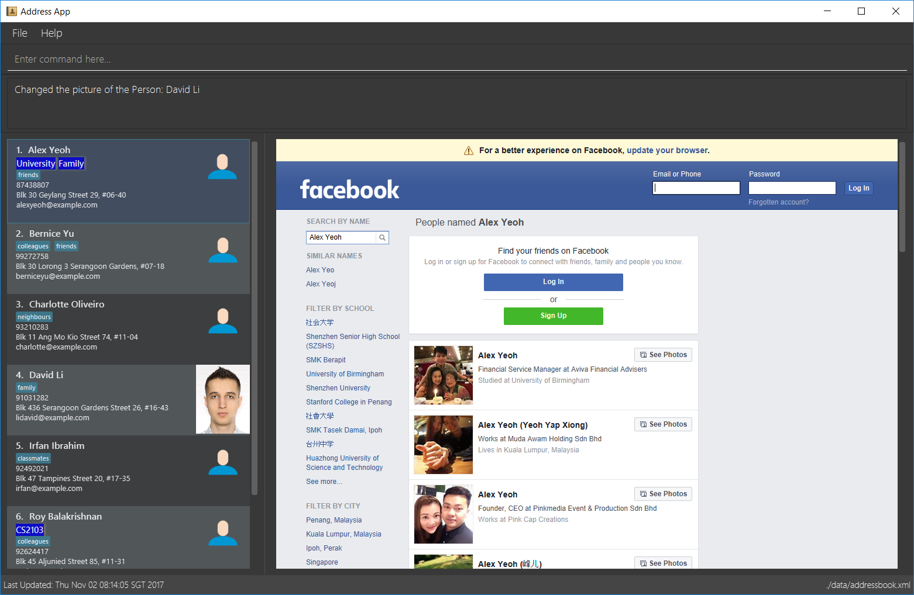

By: Team T12-B1 Since: Sept 2017 Licence: MIT
- 1. Quick Start
- 2. Features
- 2.1. Viewing help :
help - 2.2. Adding a person:
add(aliasa) - 2.3. Listing all persons :
list(aliasls) - 2.4. Editing a person :
edit - 2.5. Locating persons by name:
find(aliasf) - 2.6. Locating persons by any parameter:
filter(aliasfi) - 2.7. Locating persons by all parameter:
filterall(aliasfa) - 2.8. Deleting a person :
delete(aliasdel) - 2.9. Selecting a person :
select - 2.10. Adding an appointment:
appoint - 2.11. Removing tag :
removetag - 2.12. Grouping persons :
group - 2.13. Removing from groups :
ungroup - 2.14. Listing entered commands :
history - 2.15. Changing profile picture :
changepic(alias pic) - 2.16. Sending my contact detail to someone:
sharecontact - 2.17. Undoing previous command :
undo - 2.18. Redoing the previously undone command :
redo - 2.19. Clearing all entries :
clear(aliasclr) - 2.20. Exiting the program :
exit(aliasq) - 2.21. Exporting the data :
export - 2.22. Importing the data :
import - 2.23. Saving the data
- 2.24. Suggestions as you type
- 2.25. Autocomplete commands
- 2.26. Social Media link
- 2.1. Viewing help :
- 3. Course mode
- 4. FAQ
- 5. Hotkeys
- 6. Command Summary
1. Quick Start
-
Ensure you have Java version
1.8.0_60or later installed in your Computer.Having any Java 8 version is not enough.
This app will not work with earlier versions of Java 8. -
Download the latest
contactpro.jarhere. -
Copy the file to the folder you want to use as the home folder for your Contact Pro.
-
Double-click the file to start the app. The GUI should appear in a few seconds.
-
The first time you run the app, it will ask for your personal details and creation of password.
Tutorial will be proposed too.Coming in v2.0: whole point 5  -
Type the command in the command box and press Enter to execute it.
e.g. typinghelpand pressing Enter will open the help window. -
Some example commands you can try:
-
list: lists all contacts -
addn/John Doe p/98765432 e/johnd@example.com a/John street, block 123, #01-01: adds a contact namedJohn Doeto the address book. -
delete3: deletes the 3rd contact shown in the current list -
exit: exits the app
-
-
Refer to the Features section below for details of each command.
2. Features
Command Format
-
Words in
UPPER_CASEare the parameters to be supplied by the user e.g. inadd n/NAME,NAMEis a parameter which can be used asadd n/John Doe. -
Items in square brackets are optional e.g
n/NAME [t/TAG]can be used asn/John Doe t/friendor asn/John Doe. -
Items with
… after them can be used multiple times including zero times e.g.[t/TAG]…can be used ast/friend,t/friend t/familyetc. -
Parameters can be in any order e.g. if the command specifies
n/NAME p/PHONE_NUMBER,p/PHONE_NUMBER n/NAMEis also acceptable.
2.1. Viewing help : help
Format: help
2.2. Adding a person: add (alias a)
| TBI in v2.0: social media links, auto-capitalization |
Adds a person to the address book
Format: add n/NAME p/PHONE_NUMBER e/EMAIL a/ADDRESS … [t/TAG]… or a n/NAME p/PHONE_NUMBER e/EMAIL a/ADDRESS … [t/TAG]…
|
A person can have any number of tags and social media links (including 0) If you type full name in small letters, it will be auto-capitalized |
Examples:
-
add n/John Doe p/98765432 e/johnd@example.com a/John street, block 123, #01-01 -
add n/Betsy Crowe t/friend e/betsycrowe@example.com a/Newgate Prison p/1234567 t/criminal -
a n/Nam p/12345678 e/n@example.com a/Nam street, block 8, #02-03 t/me
2.3. Listing all persons : list (alias ls)
Shows a list of all persons in the address book, sorted alphabetically by full name.
Format: list or ls
2.4. Editing a person : edit
| Coming in v2.0: Changing picture and social media links |
Edits an existing person in the address book.
Format: edit INDEX [n/NAME] [p/PHONE] [e/EMAIL] [a/ADDRESS] … [t/TAG]…
Examples:
-
edit 1 p/91234567 e/johndoe@example.com
Edits the phone number and email address of the 1st person to be91234567andjohndoe@example.comrespectively. -
edit 2 n/Betsy Crower t/
Edits the name of the 2nd person to beBetsy Crowerand clears all existing tags.
2.5. Locating persons by name: find (alias f)
Finds persons whose names starts with the given keywords.
Format: find KEYWORD [MORE_KEYWORDS] or f KEYWORD [MORE_KEYWORDS]
Examples:
-
find John
ReturnsjohnandJohn Doe -
find Betsy Tim John
Returns any person having names starting withBetsy,Tim, orJohn -
f Na
ReturnsNam(if Nam is the only close match).
2.6. Locating persons by any parameter: filter (alias fi)
Finds persons who has parameters that matches the given keyword.
Format: filter KEYWORD [MORE_KEYWORDS] or fi KEYWORD [MORE_KEYWORDS]
Examples:
-
filter friends
ReturnsAlex YeohandBernice Yu -
filter colleagues
ReturnsBernice YuandRoy Balakrishnan -
fi alex Colleagues
ReturnsAlex Yeoh,Bernice YuandRoy Balakrishnan
2.7. Locating persons by all parameter: filterall (alias fa)
Finds persons who has parameters that matches the given keyword.
Format: filterall KEYWORD [MORE_KEYWORDS] or fa KEYWORD [MORE_KEYWORDS]
Examples:
-
filterall friends
ReturnsAlex YeohandBernice Yu -
filterall colleagues
ReturnsBernice YuandRoy Balakrishnan -
fa Bernice Colleagues
ReturnsBernice Yu -
fa colleagues friends
ReturnsBernice Yu
2.8. Deleting a person : delete (alias del)
| Coming in v2.0: deleting selected persons |
Deletes the specified person from the address book.
Format: delete INDEX or del INDEX or del selected
Examples:
-
list
delete 2
Deletes the 2nd person in the address book. -
find Betsy
delete 1
Deletes the 1st person in the results of thefindcommand. -
list
del 1
Deletes the 1st person in the address book.del selected
Deletes all selected persons.
2.9. Selecting a person : select
Coming in v2.0: select me, select all
|
Selects the person identified by the index number used in the last person listing or all person currently displayed.
Format: select INDEX or select all
Special format: select me will display your personal data
Examples:
-
list
select 2
Selects the 2nd person in the address book. -
find Betsy
select 1
Selects the 1st person in the results of thefindcommand.select all
Selects all persons currently displayed.
2.10. Adding an appointment: appoint
Since v1.3
Add an appointment to a person in the addressbook.
Format: appoint INDEX ap/date (dd/mm/yyyy) time (hh:mm) duration(minutes)
Example: appoint 1 ap/12/12/2020 15:12 60
2.11. Removing tag : removetag
Since v1.5
Used to remove a tag with TAG name
If such a tag does not exit, nothing happens.
Format: removetag t/TAG
Examples:
-
removetag t/friend
Removes the tagfriendfrom the address book.
2.12. Grouping persons : group
Since v1.2
Used to add to a group with GROUP_NAME a person identified by the index used in the last person listing.
If such a group does not exit, it is created.
Format: group INDEX gn/GROUP_NAME
Examples:
-
list
group 2 gn/CS2103
Adds the 2nd person to the group CS2103 in the address book. -
find Betsy
group 1 gn/Family
Adds the 1st person from the results of thefindcommand to the group Family.
2.13. Removing from groups : ungroup
| Coming in v2.0: ungroup |
Used to remove from a group person identified by the index used in the last person listing.
Format: ungroup INDEX gn/GROUP_NAME
Examples:
-
list
ungroup gn/CS2103 2 3
Removes the 2nd and 3rd person from the group CS2103 in the address book. -
find Betsy
ungroup gn/Family 1
Removes the 1st person from the results of thefindcommand from the group Family.
2.14. Listing entered commands : history
Lists all the commands that you have entered in reverse chronological order.
Format: history or h
|
Pressing the ↑ and ↓ arrows will display the previous and next input respectively in the command box. |
2.15. Changing profile picture : changepic (alias pic)
| TBI in v2.0: storing the pictures by the app |
Changes the profile picture of the person specified by the index
Format: changepic INDEX p/PICTURE_PATH
The picture has to be present on the drive of the computer in order to be displayed. If the picture cannot be found,
it is not shown.
To choose default picture, type default_pic.png as a path.
Examples:
-
pic 2 p/C:\Users\User\Documents\mypic.jpg -
changepic 1 p/default_pic.png
2.16. Sending my contact detail to someone: sharecontact
| TBI in v2.0 |
Share my contact details to someone in the address book, indicated by INDEX.
Format: sharecontact INDEX
Example:
-
list
sharecontact 2
2.17. Undoing previous command : undo
Restores the Contact Pro to the state before the previous undoable command was executed.
Format: undo
|
Undoable commands: those commands that modify the Contact Pro’s content ( |
Examples:
-
delete 1
list
undo(reverses thedelete 1command) -
select 1
list
undo
Theundocommand fails as there are no undoable commands executed previously. -
delete 1
clear
undo(reverses theclearcommand)
undo(reverses thedelete 1command)
2.18. Redoing the previously undone command : redo
Reverses the most recent undo command.
Format: redo
Examples:
-
delete 1
undo(reverses thedelete 1command)
redo(reapplies thedelete 1command) -
delete 1
redo
Theredocommand fails as there are noundocommands executed previously. -
delete 1
clear
undo(reverses theclearcommand)
undo(reverses thedelete 1command)
redo(reapplies thedelete 1command)
redo(reapplies theclearcommand)
2.19. Clearing all entries : clear (alias clr)
Clears all entries from the address book.
Format: clear or clr
2.20. Exiting the program : exit (alias q)
Exits the program.
Format: exit or q
2.21. Exporting the data : export
TBI in v2.0: command export
|
Exports all the data to the path specified.
Format: export PATH
Examples:
-
export C:\Users\User\Documents\exported
Exports the data to the Documents folder and saves under a name 'exported'
2.22. Importing the data : import
TBI in v2.0: command import
|
Import all the data from the path specified.
Format: import PATH
Examples:
-
import C:\Users\User\Documents\imported
Imports the data from the Documents folder and saves them in the current Contact Pro
2.23. Saving the data
Contact Pro data are saved in the hard disk automatically after any command that changes the data.
There is no need to save manually.
2.24. Suggestions as you type
| TBI in v2.0 Commands and parameters will be suggested as you type, where applicable. |
2.25. Autocomplete commands
After you type first few characters, user can press TAB to autocomplete to the if there is a unique command starting
with those characters.
2.26. Social Media link
Selecting a contact brings you directly to a list of Facebook profiles that match his/her name.
3. Course mode
View and manage your modules, grades, exams and assignments
| TBI in v2.0: Course mode |
4. FAQ
Q: How do I transfer my data to another Computer?
A: Either use export and import or install the app in the other computer and overwrite the empty data file it creates with the file that contains the data of your previous Contact Pro folder.
5. Hotkeys
| TBI in v2.0 |
6. Command Summary
TBI in v.2.0: links to social media
* Add add n/NAME p/PHONE_NUMBER e/EMAIL a/ADDRESS … [t/TAG]… (a n/NAME p/PHONE_NUMBER e/EMAIL a/ADDRESS … [t/TAG]…
e.g. add n/James Ho p/22224444 e/jamesho@example.com a/123, Clementi Rd, 1234665 t/friend t/colleague
* Clear : clear (clr)
* Delete : delete INDEX (del INDEX) or delete selected
e.g. delete 3
* Edit : edit INDEX [n/NAME] [p/PHONE_NUMBER] [e/EMAIL] [a/ADDRESS] [link/LINK]… [t/TAG]…
e.g. edit 2 n/James Lee e/jameslee@example.com
* Find : find KEYWORD [MORE_KEYWORDS] (f KEYWORD [MORE_KEYWORDS])
e.g. find James Jake
* List : list (ls)
* Help : help
TBI in v2.0: 'select me', 'select all'
* Select : select INDEX (also select me)
e.g.: select 2, select all
select me
* Remove Tag : removetag t/TAG
e.g.: removetag t/friend
* Group : group INDEX gn/GROUP_NAME
e.g.: group 2 gn/Family
* Ungroup : ungroup INDEX gn/NAME
e.g.: ungroup 2 gn/Family
* History : history (h)
* Undo : undo
* Redo : redo
* Appoint : appoint INDEX ap/DATE TIME DURATION
e.g. appoint 1 ap/12/12/2017 12:00 60
* Change Pic : changepic INDEX p/PATH (pic INDEX p/PATH)
e.g.: changepic 2 p/C:\Users\User\Documents\mypic.jpg
TBI in v2.0: import and export
* Import : import PATH
e.g. import C:\Users\User\Documents\imported
* Export : export PATH
e.g. export C:\Users\User\Documents\exported